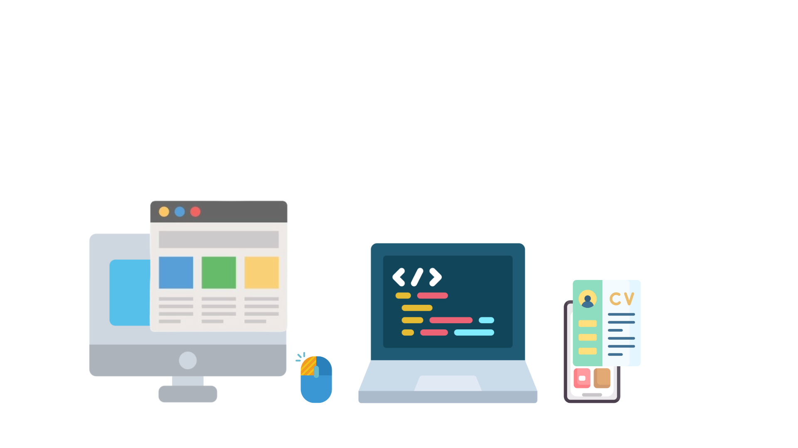

Olá! Meu nome é Theo, e é um prazer ter você aqui!
O ínicio do meu interesse por programação se deu em 2023, quando fui apresentado ao HTML5 e CSS3. Tive uma breve apresentação dessas duas linguagens de desenvolvimento, quando em 2024, conheci o Python. Obtive breves estudos como o básico de Python, conhecimento sobre Flask, e um aprofundamento em Web-Scraping, com a biblioteca do BeautifulSoup. A criação de projetos mais elaborados iniciou-se em minha escola, o Senac Sorocaba, aonde apresentaríamos sites ou aplicativos desenvolvidos por nós, alunos. Abaixo, podemos ver um pouco dos projetos em que participei, aplicando meus conhecimentos, tanto de HTML5 e CSS3, quanto de Web-Scraping com Python.